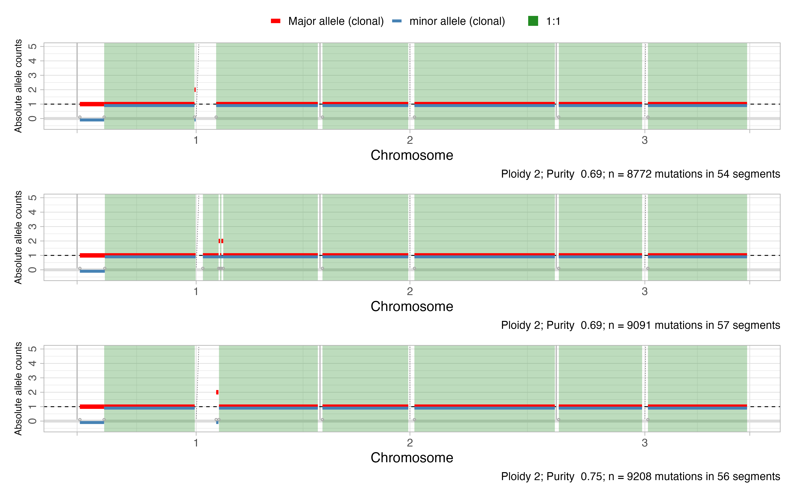
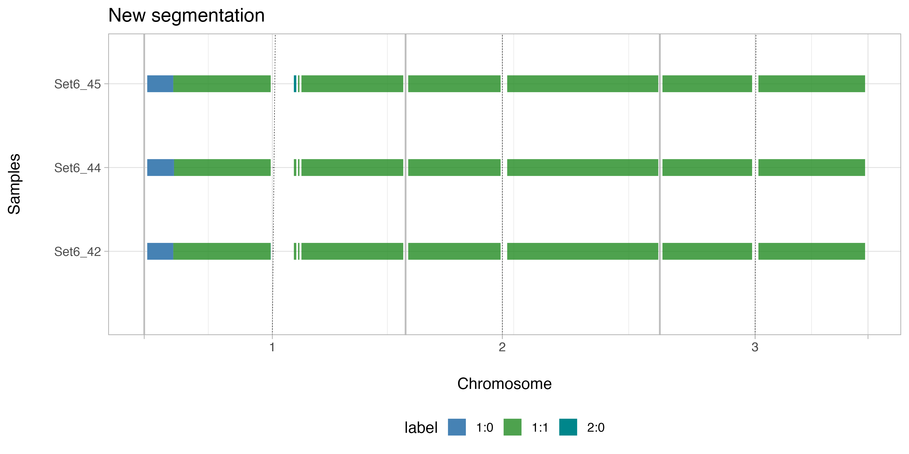

require(tidyverse)
#> Loading required package: tidyverse
require(CNAqc)
require(cli)
#> Loading required package: cli
require(patchwork)
#> Loading required package: patchworkIf treating data belonging to the same patient, but from different
samples (ie: longitudinal or multi-region sampling), it might be handful
searching for genomic regions harboring abnormal copy number states in
all of the samples. Creating a mCNAqc object allows to
modify the existing segments, by searching for regions with altered copy
number state in all samples and discarding the others. It defines new
segments and remaps existing mutations on them.
For this example we will use the same data presented in the example
data analysis in order to create a multisample CNAqc object for the
patient Set06 (samples 1-3 of the same patient).
After having extracted the information on mutations and CNA for each sample, we create a list of CNAqc objects. List names must be sample names.
CNAqc_samples = lapply(names(sample_mutations), function(x) {
CNAqc::init(mutations = sample_mutations[[x]],
cna = cna[[x]],
purity = purity[[x]],
sample = x,
ref = "GRCh38")
})
names(CNAqc_samples) = sapply(CNAqc_samples, function(x) {x$sample})Run the quality control on the created object.
All the samples are characterized by different segments among the genome, as can be see in the plot below:

Create a m_CNAqc object using the all the CNAs included
in the objects. This will define new segments according to which genomic
regions are affected by CNAs in all samples, and remap the mutations on
them. It is possible to create a m_CNAqc object either
including or not the results of the peak analysis: setting the argument
QC_filter to TRUE will use in the new
segmentation only the segments passing the QC among the different
samples.
All breakpoints (from and to of each CNA
table) from all samples are selected and reordered. The list is then
used to generate new segments intervals; only segments that are present
in all samples will be kept. Mutations are then remapped on the new
segments.
The results will be stored as a list of CNAqc objects (one per
sample) in the cnaqc_obj_new_segmentation attribute of the
mCNAqc object. If running multisample_init with the
keep_original = TRUE, the original CNAqc object will be
stored in the original_cnaqc_objc attribute; else, results
of any additional analysis performed on the original data (ie: peaks
analysis or CCF estimation) will be stored in the
original_additional_info attribute. Setting the
discard_private argument to TRUE will keep in
the new CNAqc object only those mutations falling in the same position
across all samples.
example_multisample = CNAqc::multisample_init(cnaqc_objs = CNAqc_samples,
QC_filter = TRUE, # use only segments passing QC
keep_original = TRUE, # keep the original CNAqc objects too
discard_private = FALSE) # keep also not private mutations among the samples
#>
#> ── mCNAqcqc - Defining common segments ─────────────────────────────────────────
#> ℹ Found 3 CNAqc objects:
#> • Set6_42
#> • Set6_44
#> • Set6_45
#>
#> ── Building a <mCNAqcqc> object ──
#>
#> ── Selecting new segments ──────────────────────────────────────────────────────
#> ℹ Iterating on chr1
#>
#> ── Iterating on chr1 ──
#>
#> ℹ Number of original segments in individual <CNAqc> objects in chr1:
#> • Set6_42 = 4
#> • Set6_44 = 5
#> • Set6_45 = 4
#> ℹ Found 21 breakpoints
#> ℹ Iterating on chr2
#>
#> ── Iterating on chr2 ──
#>
#> ℹ Number of original segments in individual <CNAqc> objects in chr2:
#> • Set6_42 = 2
#> • Set6_44 = 2
#> • Set6_45 = 2
#> ℹ Found 4 breakpoints
#> ℹ Iterating on chr3
#>
#> ── Iterating on chr3 ──
#>
#> ℹ Number of original segments in individual <CNAqc> objects in chr3:
#> • Set6_42 = 2
#> • Set6_44 = 2
#> • Set6_45 = 2
#> ℹ Found 4 breakpoints
#> ℹ Iterating on chr4
#>
#> ── Iterating on chr4 ──
#>
#> ℹ Number of original segments in individual <CNAqc> objects in chr4:
#> • Set6_42 = 2
#> • Set6_44 = 2
#> • Set6_45 = 2
#> ℹ Found 4 breakpoints
#> ℹ Iterating on chr5
#>
#> ── Iterating on chr5 ──
#>
#> ℹ Number of original segments in individual <CNAqc> objects in chr5:
#> • Set6_42 = 3
#> • Set6_44 = 3
#> • Set6_45 = 3
#> ℹ Found 8 breakpoints
#> ℹ Iterating on chr6
#>
#> ── Iterating on chr6 ──
#>
#> ℹ Number of original segments in individual <CNAqc> objects in chr6:
#> • Set6_42 = 2
#> • Set6_44 = 3
#> • Set6_45 = 2
#> ℹ Found 6 breakpoints
#> ℹ Iterating on chr7
#>
#> ── Iterating on chr7 ──
#>
#> ℹ Number of original segments in individual <CNAqc> objects in chr7:
#> • Set6_42 = 2
#> • Set6_44 = 2
#> • Set6_45 = 2
#> ℹ Found 4 breakpoints
#> ℹ Iterating on chr8
#>
#> ── Iterating on chr8 ──
#>
#> ℹ Number of original segments in individual <CNAqc> objects in chr8:
#> • Set6_42 = 3
#> • Set6_44 = 3
#> • Set6_45 = 3
#> ℹ Found 8 breakpoints
#> ℹ Iterating on chr9
#>
#> ── Iterating on chr9 ──
#>
#> ℹ Number of original segments in individual <CNAqc> objects in chr9:
#> • Set6_42 = 3
#> • Set6_44 = 3
#> • Set6_45 = 3
#> ℹ Found 11 breakpoints
#> ℹ Iterating on chr10
#>
#> ── Iterating on chr10 ──
#>
#> ℹ Number of original segments in individual <CNAqc> objects in chr10:
#> • Set6_42 = 4
#> • Set6_44 = 4
#> • Set6_45 = 4
#> ℹ Found 13 breakpoints
#> ℹ Iterating on chr11
#>
#> ── Iterating on chr11 ──
#>
#> ℹ Number of original segments in individual <CNAqc> objects in chr11:
#> • Set6_42 = 2
#> • Set6_44 = 2
#> • Set6_45 = 2
#> ℹ Found 4 breakpoints
#> ℹ Iterating on chr12
#>
#> ── Iterating on chr12 ──
#>
#> ℹ Number of original segments in individual <CNAqc> objects in chr12:
#> • Set6_42 = 2
#> • Set6_44 = 2
#> • Set6_45 = 2
#> ℹ Found 4 breakpoints
#> ℹ Iterating on chr13
#>
#> ── Iterating on chr13 ──
#>
#> ℹ Number of original segments in individual <CNAqc> objects in chr13:
#> • Set6_42 = 1
#> • Set6_44 = 1
#> • Set6_45 = 1
#> ℹ Found 2 breakpoints
#> ℹ Iterating on chr14
#>
#> ── Iterating on chr14 ──
#>
#> ℹ Number of original segments in individual <CNAqc> objects in chr14:
#> • Set6_42 = 1
#> • Set6_44 = 1
#> • Set6_45 = 1
#> ℹ Found 2 breakpoints
#> ℹ Iterating on chr15
#>
#> ── Iterating on chr15 ──
#>
#> ℹ Number of original segments in individual <CNAqc> objects in chr15:
#> • Set6_42 = 1
#> • Set6_44 = 1
#> • Set6_45 = 1
#> ℹ Found 3 breakpoints
#> ℹ Iterating on chr16
#>
#> ── Iterating on chr16 ──
#>
#> ℹ Number of original segments in individual <CNAqc> objects in chr16:
#> • Set6_42 = 2
#> • Set6_44 = 2
#> • Set6_45 = 2
#> ℹ Found 7 breakpoints
#> ℹ Iterating on chr17
#>
#> ── Iterating on chr17 ──
#>
#> ℹ Number of original segments in individual <CNAqc> objects in chr17:
#> • Set6_42 = 2
#> • Set6_44 = 2
#> • Set6_45 = 3
#> ℹ Found 7 breakpoints
#> ℹ Iterating on chr18
#>
#> ── Iterating on chr18 ──
#>
#> ℹ Number of original segments in individual <CNAqc> objects in chr18:
#> • Set6_42 = 2
#> • Set6_44 = 2
#> • Set6_45 = 3
#> ℹ Found 8 breakpoints
#> ℹ Iterating on chr19
#>
#> ── Iterating on chr19 ──
#>
#> ℹ Number of original segments in individual <CNAqc> objects in chr19:
#> • Set6_42 = 2
#> • Set6_44 = 2
#> • Set6_45 = 2
#> ℹ Found 4 breakpoints
#> ℹ Iterating on chr20
#>
#> ── Iterating on chr20 ──
#>
#> ℹ Number of original segments in individual <CNAqc> objects in chr20:
#> • Set6_42 = 1
#> • Set6_44 = 1
#> • Set6_45 = 1
#> ℹ Found 4 breakpoints
#> ℹ Iterating on chr21
#>
#> ── Iterating on chr21 ──
#>
#> ℹ Number of original segments in individual <CNAqc> objects in chr21:
#> • Set6_42 = 2
#> • Set6_44 = 2
#> • Set6_45 = 2
#> ℹ Found 8 breakpoints
#> ℹ Iterating on chr22
#>
#> ── Iterating on chr22 ──
#>
#> ℹ Number of original segments in individual <CNAqc> objects in chr22:
#> • Set6_42 = 1
#> • Set6_44 = 1
#> • Set6_45 = 1
#> ℹ Found 2 breakpoints
#> ℹ Iterating on chrX
#>
#> ── Iterating on chrX ──
#>
#> ℹ Number of original segments in individual <CNAqc> objects in chrX:
#> • Set6_42 = 2
#> • Set6_44 = 0
#> • Set6_45 = 2
#> ℹ Found 4 breakpoints
#> ℹ Iterating on chrY
#>
#> ── Iterating on chrY ──
#>
#> ℹ Number of original segments in individual <CNAqc> objects in chrY:
#> • Set6_42 = 1
#> • Set6_44 = 1
#> • Set6_45 = 2
#> ℹ Found 5 breakpoints
#> ℹ Shared segments across samples: 58
#> ! param `keep_original` is set to `TRUE`. Original CNAqc object will be kept.
#> ✔ Obtained updated CNA table with shared segments across samples
#> ── Mapping mutations on new segments ───────────────────────────────────────────
#> ── Set6_42 ─────────────────────────────────────────────────────────────────────
#> ℹ Found 8700 mutations in the original <CNAqc> object
#> ── Mapping mutations on shared segments ────────────────────────────────────────
#> ! Detected indels mutation (substitutions with >1 reference/alternative nucleotides).
#> ✔ Fortified calls for 8700 somatic mutations: 8684 SNVs (100%) and 16 indels.
#> ! Added segments length (in basepairs) to CNA segments.
#> ✔ Fortified CNAs for 58 segments: 58 clonal and 0 subclonal.
#> Warning in map_mutations_to_clonal_segments(mutations, cna_clonal): [CNAqc] a
#> karyotype column is present in CNA calls, and will be overwritten
#> ✔ 8407 mutations mapped to clonal CNAs.
#> ── Set6_44 ─────────────────────────────────────────────────────────────────────
#> ℹ Found 8734 mutations in the original <CNAqc> object
#> ── Mapping mutations on shared segments ────────────────────────────────────────
#> ! Detected indels mutation (substitutions with >1 reference/alternative nucleotides).
#> ✔ Fortified calls for 8734 somatic mutations: 8719 SNVs (100%) and 15 indels.
#> ! Added segments length (in basepairs) to CNA segments.
#> ✔ Fortified CNAs for 58 segments: 58 clonal and 0 subclonal.
#> Warning in map_mutations_to_clonal_segments(mutations, cna_clonal): [CNAqc] a
#> karyotype column is present in CNA calls, and will be overwritten
#> ✔ 8718 mutations mapped to clonal CNAs.
#> ── Set6_45 ─────────────────────────────────────────────────────────────────────
#> ℹ Found 9143 mutations in the original <CNAqc> object
#> ── Mapping mutations on shared segments ────────────────────────────────────────
#> ! Detected indels mutation (substitutions with >1 reference/alternative nucleotides).
#> ✔ Fortified calls for 9143 somatic mutations: 9125 SNVs (100%) and 18 indels.
#> ! Added segments length (in basepairs) to CNA segments.
#> ✔ Fortified CNAs for 58 segments: 58 clonal and 0 subclonal.
#> Warning in map_mutations_to_clonal_segments(mutations, cna_clonal): [CNAqc] a
#> karyotype column is present in CNA calls, and will be overwritten
#> ✔ 8851 mutations mapped to clonal CNAs.
#>
#> ── Defining the <mCNAqcqc> object ──────────────────────────────────────────────
#>
#> ── CNAqc - CNA Quality Check ───────────────────────────────────────────────────
#> ℹ Using reference genome coordinates for: GRCh38.
#> ! Detected indels mutation (substitutions with >1 reference/alternative nucleotides).
#> ✔ Fortified calls for 8407 somatic mutations: 8392 SNVs (100%) and 15 indels.
#> ! Added segments length (in basepairs) to CNA segments.
#> ✔ Fortified CNAs for 58 segments: 58 clonal and 0 subclonal.
#> Warning in map_mutations_to_clonal_segments(mutations, cna_clonal): [CNAqc] a
#> karyotype column is present in CNA calls, and will be overwritten
#> ✔ 8407 mutations mapped to clonal CNAs.
#>
#> ── CNAqc - CNA Quality Check ───────────────────────────────────────────────────
#> ℹ Using reference genome coordinates for: GRCh38.
#> ! Detected indels mutation (substitutions with >1 reference/alternative nucleotides).
#> ✔ Fortified calls for 8718 somatic mutations: 8703 SNVs (100%) and 15 indels.
#> ! Added segments length (in basepairs) to CNA segments.
#> ✔ Fortified CNAs for 58 segments: 58 clonal and 0 subclonal.
#> Warning in map_mutations_to_clonal_segments(mutations, cna_clonal): [CNAqc] a
#> karyotype column is present in CNA calls, and will be overwritten
#> ✔ 8718 mutations mapped to clonal CNAs.
#>
#> ── CNAqc - CNA Quality Check ───────────────────────────────────────────────────
#> ℹ Using reference genome coordinates for: GRCh38.
#> ! Detected indels mutation (substitutions with >1 reference/alternative nucleotides).
#> ✔ Fortified calls for 8851 somatic mutations: 8836 SNVs (100%) and 15 indels.
#> ! Added segments length (in basepairs) to CNA segments.
#> ✔ Fortified CNAs for 58 segments: 58 clonal and 0 subclonal.
#> Warning in map_mutations_to_clonal_segments(mutations, cna_clonal): [CNAqc] a
#> karyotype column is present in CNA calls, and will be overwritten
#> ✔ 8851 mutations mapped to clonal CNAs.
#>
#> ── Creating mCNAqc stats ──
#>
#> ── Ended ───────────────────────────────────────────────────────────────────────
#> ✔ <mCNAqc> object created including all samples
print(example_multisample)
#> ── [ multi CNAqc ] ─────────────────────────────────────────────────────────────
#> • Rerefence genome: GRCh38
#> • Samples used: Set6_42, Set6_44, Set6_45
#> • 58 total shared segments across samples
#> • 8407, 8718, and 8851 mutations on shared segments across samples
#> ℹ All samples had good quality and were used to create the new segmentation
#>
#> ── Original CNAqc object avaiable for Set6_42, Set6_44, Set6_45The function plot_segments_multisample allows
visualization of the effect of the new segmentation across all the
samples included in the mCNAqc object.
CNAqc::plot_segments_multisample(example_multisample, which = "shared", chromosomes = paste0("chr", 1:3)) + ggplot2::ggtitle("New segmentation")
#>
#> ── Retrieving <CNAqc> objects with the new segmentation ────────────────────────
mCNAqc object
Sample names can be retrieved using the get_sample_name
function, which can also be applied on classical CNAqc
objects.
CNAqc::get_sample_name(example_multisample)
#> [1] "Set6_42" "Set6_44" "Set6_45"Elements inside the mCNAqc object (for desired samples)
can be accessed through the get_sample function. It returns
a list of CNAqc objects. In this way, it is possible to obtain a joint
table with all the mutations across samples:
res = CNAqc::get_sample(example_multisample,
sample = get_sample_name(example_multisample),
which_obj = "shared")
#>
#> ── Retrieving <CNAqc> objects with the new segmentation ────────────────────────
lapply(res, function(x) {CNAqc::Mutations(x)}) %>%
dplyr::bind_rows()
#> # A tibble: 25,976 × 51
#> chr from to ref alt NV DP VAF Indiv Key FR MMLQ
#> <chr> <dbl> <dbl> <chr> <chr> <dbl> <dbl> <dbl> <chr> <int> <chr> <dbl>
#> 1 chr1 3634121 3634122 C T 42 63 0.667 Set6… 72 0.42… 37
#> 2 chr1 3643785 3643786 G A 34 59 0.576 Set6… 73 0.42… 37
#> 3 chr1 4161648 4161649 C A 18 37 0.486 Set6… 81 0.42… 37
#> 4 chr1 5513535 5513536 A T 10 44 0.227 Set6… 95 0.07… 37
#> 5 chr1 5882139 5882140 C T 35 55 0.636 Set6… 110 0.42… 37
#> 6 chr1 6595746 6595747 G A 23 53 0.434 Set6… 122 0.42… 37
#> 7 chr1 7836836 7836837 C T 18 35 0.514 Set6… 140 0.42… 37
#> 8 chr1 8570678 8570679 C T 32 55 0.582 Set6… 149 0.42… 37
#> 9 chr1 9149650 9149651 T G 45 59 0.763 Set6… 154 0.42… 37
#> 10 chr1 10218495 10218496 T G 20 41 0.488 Set6… 167 0.42… 37
#> # ℹ 25,966 more rows
#> # ℹ 39 more variables: TCR <int>, HP <int>, WE <int>, Source <chr>, FS <chr>,
#> # WS <int>, PP <chr>, TR <chr>, NF <chr>, TCF <int>, NR <chr>, TC <int>,
#> # END <chr>, MGOF <chr>, SbPval <chr>, START <chr>, ReadPosRankSum <chr>,
#> # MQ <chr>, QD <dbl>, SC <chr>, BRF <dbl>, HapScore <chr>, Size <chr>,
#> # ID <chr>, QUAL <chr>, FILTER <chr>, INFO <chr>, gt_GT <chr>, gt_GQ <chr>,
#> # gt_GOF <chr>, gt_NR <chr>, gt_GL <chr>, gt_NV <chr>, gt_GT_alleles <chr>, …